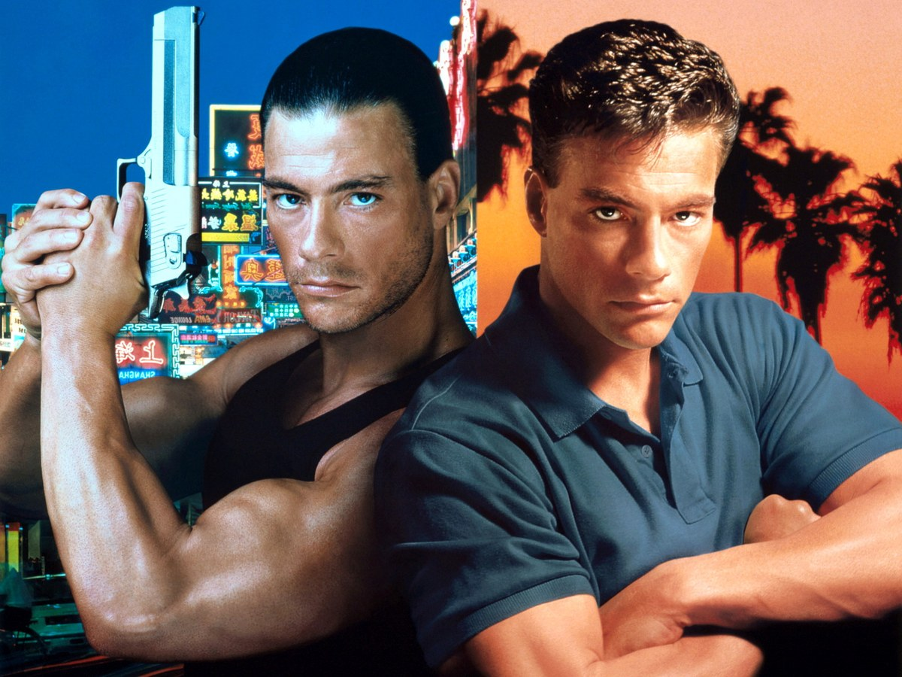
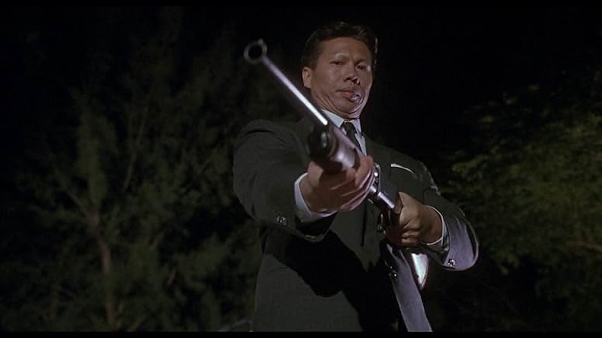
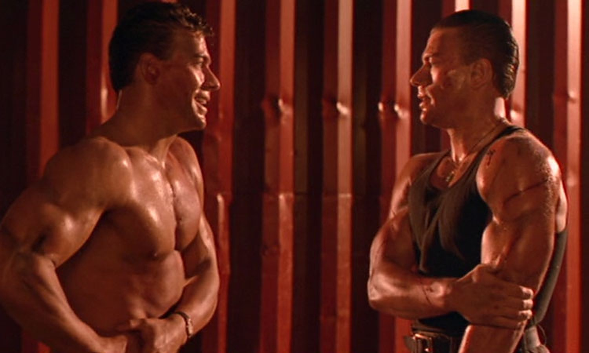

Sommaire8 sections
Dans les années 90, un lundi soir sur M6, je découvre Double Impact. Deux Van Damme dans un film d'action vraiment cool : tous les ingrédients pour plaire à un ado de 12 ans.
L'histoire se passe à Hong Kong, et Bolo Yeung est de retour, en méchant salopard. Les scènes d'action sont généreuses, Jean-Claude Van Damme est au top de sa forme, et on a deux Van Damme pour le prix d'un. C'est l'un de mes films préférés.
Ce soir, on double la mise.

L'affiche du film
Double Impact est un film d'action américain de 1991, réalisé par Sheldon Lettich. Il sort aux États-Unis le 9 août 1991 chez Columbia Pictures et dure 110 minutes. Le scénario est de Sheldon Lettich et Jean-Claude Van Damme, sur une histoire de Lettich, Van Damme, Steve Meerson et Peter Krikes. Les producteurs sont Jean-Claude Van Damme et Ashok Amritraj.
Jean-Claude Van Damme joue les jumeaux Chad et Alex Wagner. Geoffrey Lewis est Frank Avery, Alan Scarfe est Nigel Griffith, Philip Chan est Raymond Zhang et Bolo Yeung est Moon. Corinna Everson joue Kara et Alonna Shaw, Danielle Wilde.
Le point de départ : deux jumeaux identiques, séparés dans l'enfance après le meurtre de leurs parents à Hong Kong par les triades, se retrouvent adultes et cherchent à se venger.
Le tournage a lieu à Hong Kong à partir du 4 novembre 1990, puis à Los Angeles pour la plupart des intérieurs. La musique est d'Arthur Kempel.
Pour Double Impact, Jean-Claude Van Damme cosigne le scénario avec Sheldon Lettich et produit le film avec Ashok Amritraj. L'idée d'un double rôle vient de Lettich, qui s'est inspiré des Frères corses d'Alexandre Dumas. Van Damme voulait que ce rôle change son image et l'éloigne des seuls films d'arts martiaux : « Alex est violent et Chad ne l'est pas, donc le public verra le contraste dans mon travail. » Il ajoute : « Si je reste dans les films d'arts martiaux, les gens se lasseront de mes films. »
Le budget est de 15 à 16 millions de dollars. Van Damme aurait été payé 600 000 dollars. Le tournage commence à Hong Kong le 4 novembre 1990 : la Lippo Centre (le siège de Griffith), le terminal à conteneurs de Tsing Yi (les scènes avec Zhang et les triades), le terminal du Star Ferry (la scène de l'évasion) et Mong Tung Wan, sur l'île de Lantau (la planque des jumeaux). La plupart des intérieurs sont tournés à Los Angeles, et la scène du dojo à Santa Clarita.
Le film sort aux États-Unis le 9 août 1991. Il démarre à la 2e place du box-office avec 7,5 millions de dollars le premier week-end, et totalise 80,5 millions de dollars aux États-Unis (Box Office Mojo).
La critique est partagée : 33 % sur Rotten Tomatoes (24 critiques), une note de « B+ » au CinemaScore. Roger Ebert lui donne deux étoiles et écrit qu'il a « le budget et la production d'un James Bond mineur ». Caryn James, du New York Times, résume : « Deux Jean-Claude Van Damme, c'est à peu près comme un seul. » Kevin Thomas, du Los Angeles Times, y voit un film d'action-aventure « solide et rapide ».
Sheldon Lettich dira que le concept du double rôle a si bien marché que d'autres producteurs ont voulu le répéter, ce qui a mené à Timecop, Maximum Risk et Replicant. Une suite a été évoquée pendant des années et confirmée en 2012, mais le projet est tombé à l'eau en 2015, faute de droits.

Bolo Yeung, en méchant machiavélique
Hong Kong, 1966. Paul Wagner, un industriel, est assassiné ainsi que sa femme par la mafia chinoise. Leurs deux fils, Chad et Alex, des jumeaux seulement âgés de quelques mois, échappent au massacre et sont séparés.
25 ans plus tard, Chad vit aux États-Unis avec Frank, l'ancien garde du corps des Wagner, et est devenu professeur de karaté. De son côté, Alex vit à Hong Kong et mène une existence de malfrat.
Chad, qui ignore tout de l'existence de son frère jumeau, et Frank décident de se rendre à Hong Kong afin de retrouver Alex et, par la même occasion, les deux frères que tout oppose vont tout tenter pour venger leurs parents…
Double Impact repose sur une idée simple : deux frères, deux caractères, un seul acteur. Jean-Claude Van Damme joue Chad et Alex Wagner. Sheldon Lettich s'est inspiré des Frères corses d'Alexandre Dumas. Pour Van Damme, c'était l'occasion de montrer deux facettes : l'un est violent, l'autre non, et le public voit le contraste.
L'action est au premier plan. Le film se passe à Hong Kong et y est en grande partie tourné, de la Lippo Centre au terminal du Star Ferry. Bolo Yeung, déjà face à Van Damme dans Bloodsport, revient en méchant. Van Damme pensait aussi que la scène d'amour élargirait le public du film.
La critique est partagée : 33 % sur Rotten Tomatoes (24 critiques), « B+ » au CinemaScore. Roger Ebert lui donne deux étoiles, et le New York Times résume : deux Van Damme, c'est à peu près comme un seul. Kevin Thomas, du Los Angeles Times, y voit au contraire un film d'action « solide et rapide ».
Le public, lui, a suivi : 80,5 millions de dollars aux États-Unis pour un budget de 15 à 16 millions, soit environ cinq fois la mise. Et l'idée a fait école : Lettich explique que le double rôle a donné envie à d'autres producteurs de le répéter, d'où Timecop, Maximum Risk et Replicant.
Mon avis : des scènes d'action généreuses, Van Damme au top de sa forme, deux Van Damme pour le prix d'un. C'est l'un de mes films préférés.

Chad et Alex
À sa sortie, la critique est partagée. Pourtant, Double Impact est resté.
Il a d'abord trouvé son public. Pour un budget de 15 à 16 millions de dollars, il rapporte 80,5 millions aux États-Unis, après un démarrage à la 2e place du box-office. Le public lui donne un « B+ » au CinemaScore.
Il a ensuite fait école. Sheldon Lettich explique que le double rôle a donné envie à d'autres producteurs de le répéter : Timecop, Maximum Risk et Replicant en sont nés.
Il a gardé ses fans. En 2012, Van Damme déclare à MTV que Double Impact ferait « une belle franchise », et une suite est confirmée. Le projet tombe à l'eau en 2015 faute de droits, mais en 2019, Lettich, lors d'une projection à l'Alamo Drafthouse, dit que la principale raison est le succès même du premier film.
Il a aussi continué d'exister en vidéo : un Blu-ray remasterisé chez MVD Visual en mai 2019, puis un Ultra HD Blu-ray en février 2026. Sa bande originale est sortie en 1993 chez Silva America.
Mais un classique, c'est aussi une affaire de mémoire. Pour moi, c'est un lundi soir sur M6, deux Van Damme, et un ado de 12 ans.
Parce que c'est un film d'action sans détour : deux frères, une vengeance, Hong Kong. Il dure 110 minutes, et on sait où l'on va dès les premières scènes.
Parce que le double rôle de Jean-Claude Van Damme est le cœur du film. Chad et Alex ont deux caractères opposés, et Van Damme joue sur ce contraste : il l'avait voulu pour montrer autre chose que des arts martiaux.
Parce que Hong Kong vaut le détour. Le film y est tourné en partie, de la Lippo Centre au terminal du Star Ferry, avec Los Angeles pour la plupart des intérieurs.
Parce que Bolo Yeung est de retour en méchant, des scènes d'action généreuses, et Van Damme au top de sa forme.
Parce que c'est un morceau de l'histoire du cinéma d'action des années 1990 : un film qui a lancé l'idée du double rôle, reprise dans Timecop, Maximum Risk et Replicant.
Et parce que certains films se retrouvent comme on retrouve une cassette : on appuie sur lecture, et on est de nouveau un lundi soir sur M6, à douze ans.
Double Impact n'est pas le film le mieux noté de son époque, et la critique l'a partagée. Mais il a trouvé son public, et il l'a gardé.
Pour moi, tout commence un lundi soir sur M6, dans les années 90, devant deux Van Damme dans un film d'action vraiment cool. J'avais 12 ans.
Je le revois régulièrement, et chaque fois, il me renvoie à ce fameux lundi soir. L'un de mes passages préférés : le combat final contre Bolo Yeung.
La cassette est dans le lecteur. On rembobine.
Titre original
Double Impact
Pays
États-Unis
Genre
Action · Arts martiaux
Durée
110 min
Producteur
Jean-Claude Van Damme · Ashok Amritraj
Avec aussi
Geoffrey Lewis · Alan Scarfe · Bolo Yeung
Musique
Arthur Kempel
Note
Un lundi soir sur M6, deux Van Damme
SOMEDAY — S3 EP. 06